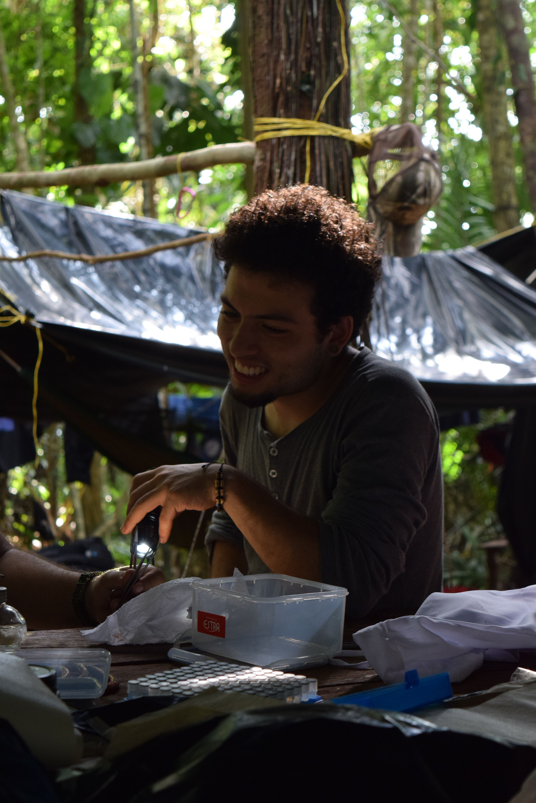

Gallery

Andinobates opisthomelas — redescription

Cochranella granulosa — geographic call variation

Pristimantis sp. nov. — Serranía del Baudó

Fieldwork in Chocó, Colombia
I am a biologist from Bello, Antioquia, with a deep interest in the amphibians and reptiles of the Neotropics. My research focuses on bioacoustics and taxonomy — using frog calls to understand species boundaries and evolutionary relationships in one of the most diverse regions on earth.
I have done fieldwork across Colombia, from the Chocoan rainforest to the Andean cloud forests to the flooded plains of the Llanos, often in remote or difficult-to-access sites. I have also collaborated on environmental assessments, conservation planning, and biological collections work.

I grew up in Bello, Antioquia, and have been drawn to frogs and reptiles for as long as I can remember. I studied biology at Universidad EAFIT in Medellín, graduating in 2024. My research sits at the intersection of bioacoustics and taxonomy — I use frog calls as a window into species diversity and evolutionary relationships.
Most of my fieldwork happens in places that are hard to reach and rarely studied: cloud forests in the Andes, Chocoan rainforests, remote mining regions, and flooded savannas. I have also worked extensively on environmental impact assessments across Colombia, conducting biodiversity inventories for conservation and regulatory purposes.
I am currently based in Medellín and open to collaborations, field projects, and graduate opportunities.
Fieldwork across Colombia — from Chocoan rainforests to Andean cloud forests to the flooded savannas of the Llanos. Often in remote, rarely-studied sites.
Herpetofauna surveys, new species discovery, ecotourism naturalist work, and science outreach in one of the most biodiverse regions on earth.
Repeated biodiversity inventories for mining projects and private nature reserve establishment across the northern Andes.
Amphibian and reptile survey for the environmental management plan of an airport in the eastern plains.
EIA herpetofauna surveys and biodiversity offset assessments for infrastructure projects.
Wildlife capture and relocation for infrastructure decommissioning on the Colombian Pacific coast.
Herpetofauna baseline characterization for the EIA of an electrical substation.
I am always happy to hear from fellow researchers, potential collaborators, or anyone curious about Colombian herpetology. The best way to reach me is by email.
jdurangocardona@gmail.com